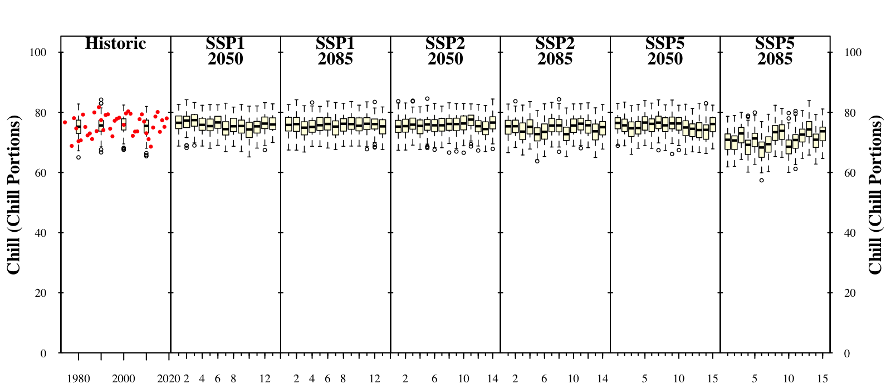
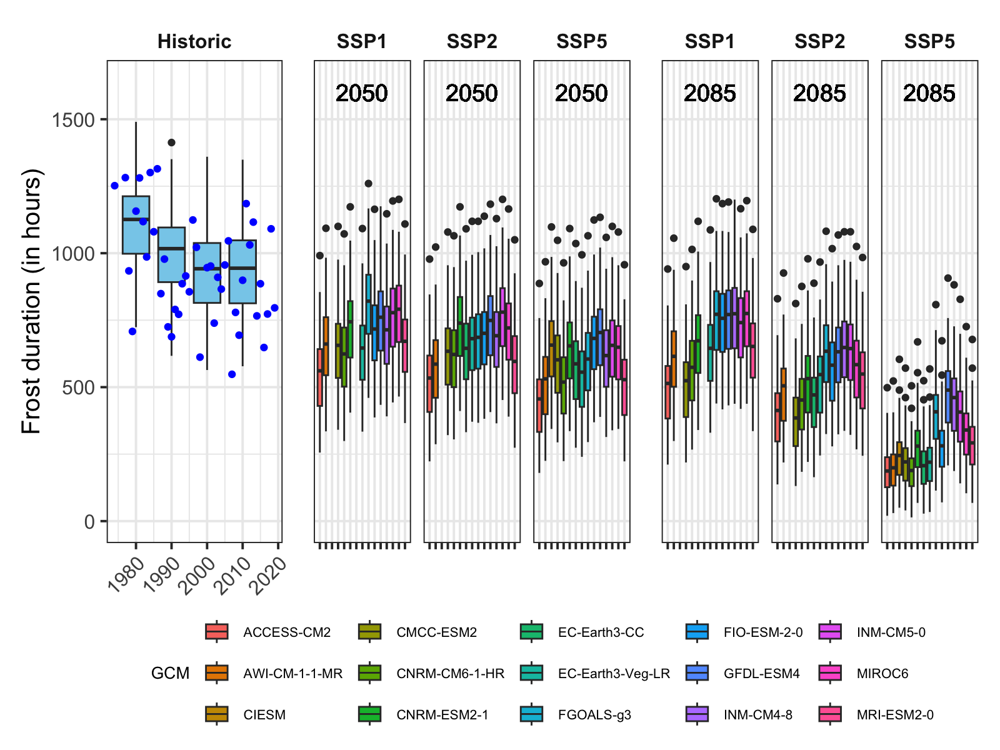

Chapter 17 Plotting future scenario
17.1 Produce similar plots for the weather station you selected for earlier exercises.
chill_future_scenario_list_GWANGJU <- load_temperature_scenarios("KR_data/GWANGJU_future_climate","GWANGJU_futurechill_305")
chill_hist_scenario_list_GWANGJU<-load_temperature_scenarios("KR_data","GWANGJU_hist_chill_305_59")
observed_chill_GWANGJU <- read_tab("KR_data/GWANGJU_observed_chill_305_59.csv")
#observed chill = actual chill
chills_GWANGJU <- make_climate_scenario(
chill_hist_scenario_list_GWANGJU,
caption = "Historic",
historic_data = observed_chill_GWANGJU,
time_series = TRUE)
SSPs <- c("ssp126", "ssp245", "ssp585")
Times <- c(2050, 2085)
list_ssp <-
strsplit(names(chill_future_scenario_list_GWANGJU), '\\.') %>%
map(2) %>%
unlist()
list_gcm <-
strsplit(names(chill_future_scenario_list_GWANGJU), '\\.') %>%
map(3) %>%
unlist()
list_time <-
strsplit(names(chill_future_scenario_list_GWANGJU), '\\.') %>%
map(4) %>%
unlist()
for(SSP in SSPs)
for(Time in Times)
{
# find all scenarios for the ssp and time
GWANGJU_chill <- chill_future_scenario_list_GWANGJU[list_ssp == SSP & list_time == Time]
names(GWANGJU_chill) <- list_gcm[list_ssp == SSP & list_time == Time]
if(SSP == "ssp126") SSPcaption <- "SSP1"
if(SSP == "ssp245") SSPcaption <- "SSP2"
if(SSP == "ssp585") SSPcaption <- "SSP5"
if(Time == "2050") Time_caption <- "2050"
if(Time == "2085") Time_caption <- "2085"
chills_GWANGJU <- GWANGJU_chill %>%
make_climate_scenario(
caption = c(SSPcaption,
Time_caption),
add_to = chills_GWANGJU)
}
plot_climate_scenarios(
climate_scenario_list = chills_GWANGJU,
metric = "Chill_Portions",
metric_label = "Chill (Chill Portions)",
texcex = 1)
# We'll first process the past scenarios (element 1 of the chills list).
# Within the data element, we have a list of multiple data.frames for
# the various past scenarios.
# Using a 'for' loop, we cycle through all these data.frames.
for(nam in names(chills_GWANGJU[[1]]$data))
{
# Extract the data frame.
ch <- chills_GWANGJU[[1]]$data[[nam]]
# Add columns for the new information we have to add and fill them.
ch[,"GCM"] <- "none"
ch[,"SSP"] <- "none"
ch[,"Year"] <- as.numeric(nam)
# Now check if this is the first time we've gone through this loop.
# If this is the first time, the ch data.frame becomes the output
# object (past_simulated).
# If it is not the first time ('else'), we add the current data.frame
# to the 'past_simulated' object
if(nam == names(chills_GWANGJU[[1]]$data)[1])
past_simulated <- ch else
past_simulated <- rbind(past_simulated,
ch)
}
# We add another column called 'Scenario' and label all rows as 'Historic'
past_simulated["Scenario"] <- "Historic"
head(past_simulated)
# We'll want to add the historic observation too, so let's simplify the
# pointer to this information for easier use later
past_observed <- chills_GWANGJU[[1]][["historic_data"]]
head(past_observed)
# Extract future data
for(i in 2:length(chills_GWANGJU))
for(nam in names(chills_GWANGJU[[i]]$data))
{ch <- chills_GWANGJU[[i]]$data[[nam]]
ch[,"GCM"] <- nam
ch[,"SSP"] <- chills_GWANGJU[[i]]$caption[1]
ch[,"Year"] <- chills_GWANGJU[[i]]$caption[2]
if(i == 2 & nam == names(chills_GWANGJU[[i]]$data)[1])
future_data <- ch else
future_data <- rbind(future_data,ch)
}
for(i in 2:length(chills_GWANGJU)) {
for(nam in names(chills_GWANGJU[[i]]$data)[!is.na(names(chills_GWANGJU[[i]]$data))]) {
ch <- chills_GWANGJU[[i]]$data[[nam]]
ch[,"GCM"] <- nam
ch[,"SSP"] <- chills_GWANGJU[[i]]$caption[1]
ch[,"Year"] <- chills_GWANGJU[[i]]$caption[2]
if(i == 2 & nam == names(chills_GWANGJU[[i]]$data)[1])
future_data <- ch else
future_data <- rbind(future_data,ch)
}
}
head(future_data) #long dataset
metric <- "GDH" #this can be changed to what I want to see (like Chill_Portions,Frost_H ect.)
axis_label <- "Heat (in GDH)"

Figure 17.1: plot of chill accumulation
plot_scenarios_gg <- function(past_observed,
past_simulated,
future_data,
metric,
axis_label)
{
rng <- range(past_observed[[metric]], #get extreme values for the axis scale
past_simulated[[metric]],
future_data[[metric]])
past_plot <- ggplot() +
geom_boxplot(data = past_simulated,
aes_string("as.numeric(Year)",
metric,
group="Year"),
fill="skyblue") +
scale_y_continuous(limits = c(0,
round(round(1.1*rng[2])))) +
labs(x = "Year", y = axis_label) +
facet_grid(~ Scenario) +
theme_bw(base_size = 15) +
theme(strip.background = element_blank(),
strip.text = element_text(face = "bold"),
axis.text.x = element_text(angle=45,
hjust=1)) +
geom_point(data = past_observed,
aes_string("End_year",
metric),
col="blue")
future_plot_list <- list()
for(y in c(2050,
2085))
{
future_plot_list[[which(y == c(2050,2085))]] <-
ggplot(data = future_data[which(future_data$Year==y),]) +
geom_boxplot(aes_string("GCM",
metric,
fill="GCM")) +
facet_wrap(vars(SSP)) +
scale_x_discrete(labels = NULL,
expand = expansion(add = 1)) +
scale_y_continuous(limits = c(0,
round(round(1.1*rng[2])))) +
geom_text_npc(aes(npcx = "center",
npcy = "top",
label = Year),
size = 5) +
theme_bw(base_size = 15) +
theme(axis.ticks.y = element_blank(),
axis.text = element_blank(),
axis.title = element_blank(),
legend.position = "bottom",
legend.margin = margin(0,
0,
0,
0,
"cm"),
legend.background = element_rect(),
strip.background = element_blank(),
strip.text = element_text(face = "bold"),
legend.box.spacing = unit(0, "cm"),
plot.subtitle = element_text(hjust = 0.5,
vjust = -1,
size = 15 * 1.05,
face = "bold"))
}
plot <- (past_plot +
future_plot_list +
plot_layout(guides = "collect",
widths = c(1,rep(1.8,length(future_plot_list))))
) & theme(legend.position = "bottom",
legend.text = element_text(size=8),
legend.title = element_text(size=10),
axis.title.x=element_blank())
plot
}
plot_scenarios_gg(past_observed=past_observed,
past_simulated=past_simulated,
future_data=future_data,
metric="GDH",
axis_label="Heat (in Growing Degree Hours)")
plot_scenarios_gg(past_observed=past_observed,
past_simulated=past_simulated,
future_data=future_data,
metric="Chill_Portions",
axis_label="Chill (in Chill Portions)")
plot_scenarios_gg(past_observed=past_observed,
past_simulated=past_simulated,
future_data=future_data,
metric="Frost_H",
axis_label="Frost duration (in hours)")
# use ggsave for the adjustable format for a paper
#ggsave("data/__, width= 10, height =5, dpi = 600) # dpi resolution plots of chill, heat and frost hour accumulation with time series labels

Figure 17.2: plot of chill accumulation

Figure 17.3: plot of heat accumulation

Figure 17.4: plot of frost hour accumulation